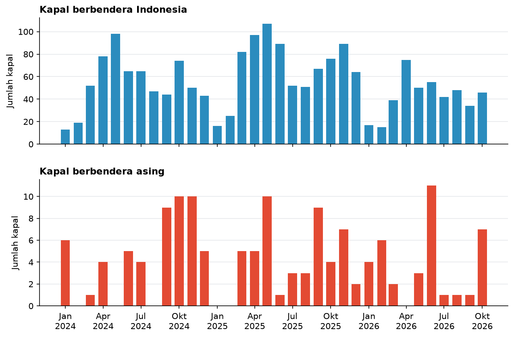

Mendeteksi Kapal Ikan Mencurigakan di Laut Natuna Utara 2024–2026 dengan Data AIS
Latar belakang
Laut Natuna Utara adalah salah satu perairan paling kaya ikan di Indonesia, sekaligus salah satu yang paling sering didatangi kapal asing. Hal ini terjadi karena letaknya berbatasan langsung dengan perairan Malaysia dan Vietnam, dan sebagian wilayahnya juga tumpang tindih dengan klaim sembilan garis putus-putus Tiongkok yang tidak diakui Indonesia. Kasus kapal ikan asing yang ditangkap di perairan ini hampir selalu muncul setiap tahun.
Masalahnya, luas Zona Ekonomi Eksklusif (ZEE) Indonesia di kawasan ini lebih dari 250 ribu km², hampir dua kali luas Pulau Jawa. Kapal patroli tidak mungkin mengawasi semuanya sekaligus. Di sinilah data satelit bisa membantu. Sebagian besar kapal besar memancarkan sinyal AIS (Automatic Identification System) yang berisi posisi, kecepatan, dan identitasnya. Dari pola pergerakan itu, bisa diketahui kapal mana yang sedang menangkap ikan, kapal mana yang berhenti lama di tengah laut, dan di mana semua itu terjadi.
Proyek ini mencoba menjawab tiga pertanyaan. Seberapa sering kapal asing tercatat menangkap ikan di ZEE Indonesia di Laut Natuna Utara? Di mana dan kapan mereka paling sering muncul? Dan dari ratusan kapal yang tercatat, kapal mana yang paling layak diperiksa lebih dulu?
Data yang digunakan
| Data | Format Data | Jenis Data | Sumber |
|---|---|---|---|
| Kejadian menangkap ikan (fishing events), Januari 2024–Oktober 2026 | Titik kejadian | Sekunder | Global Fishing Watch API v3 |
| Kejadian berhenti lama di laut (loitering events), Januari 2024–Oktober 2026 | Titik kejadian | Sekunder | Global Fishing Watch API v3 |
| Batas ZEE Indonesia dan garis batas dengan negara tetangga | Vektor | Sekunder | Marine Regions (VLIZ) |
| Kawasan konservasi perairan | Vektor | Sekunder | World Database on Protected Areas (UNEP-WCMC) |
Global Fishing Watch mengolah miliaran sinyal AIS dari seluruh dunia dan memakai model machine learning untuk menandai kapan sebuah kapal sedang menangkap ikan, berdasarkan pola kecepatan dan arah geraknya. Setiap kejadian dicatat lengkap dengan posisi, waktu mulai dan selesai, bendera kapal, serta jaraknya dari pelabuhan. Kawasan studi dibatasi pada bagian ZEE Indonesia di sebelah utara Kepulauan Natuna, antara 104,8°–110,0° BT dan 2,0°–6,8° LU.
Metode
Langkah pertama adalah mengumpulkan semua kejadian menangkap ikan dan berhenti lama di kawasan studi, bulan demi bulan dari Januari 2024 sampai Oktober 2026. Kejadian berhenti lama hanya diambil untuk kapal ikan dan kapal pengangkut yang berada lebih dari 50 km dari pelabuhan. Kapal yang berhenti di dekat pelabuhan umumnya hanya sedang berlabuh atau menunggu giliran bongkar muatan, sehingga tidak perlu dicurigai. Lain halnya jika kapal berhenti berjam-jam di tengah laut, jauh dari pelabuhan. Kapal itu bisa saja sedang berlindung dari cuaca buruk, tetapi bisa juga sedang memindahkan hasil tangkapan ke kapal lain secara diam-diam, supaya ikannya tidak tercatat saat kembali ke pelabuhan.
Setelah itu, setiap kapal diberi skor dengan dua cara. Cara pertama adalah skor aturan, yaitu poin yang ditambahkan setiap kali sebuah kapal menunjukkan perilaku yang patut dicurigai. Bobotnya bisa dilihat pada tabel berikut.
| Perilaku | Poin |
|---|---|
| Kapal berbendera asing tercatat menangkap ikan di ZEE Indonesia | 50 |
| Kapal berbendera asing hanya berhenti lama, tanpa tercatat menangkap ikan | 20 |
| Menangkap ikan di dalam kawasan konservasi perairan | 20 |
| Menangkap ikan kurang dari 20 km dari garis batas ZEE | 15 |
| Berhenti lama lebih dari 50 km dari pelabuhan, total 72 jam atau lebih | 15 |
Total poin dibatasi sampai 100, lalu dikelompokkan menjadi empat kategori, yaitu rendah (0–19), perlu dicermati (20–39), tinggi (40–59), dan sangat tinggi (60–100).
Bobot ini ditentukan berdasarkan seberapa kecil kemungkinan sebuah perilaku punya alasan yang sah. Kapal asing yang menangkap ikan mendapat poin terbesar, karena Indonesia tidak lagi memberikan izin tangkap untuk kapal berbendera asing. Sebaliknya, berhenti lama atau berada dekat garis batas hanya diberi poin kecil, karena keduanya bisa terjadi karena alasan yang wajar, seperti cuaca buruk atau posisi AIS yang sedikit meleset. Batas 72 jam dipilih karena separuh kapal yang pernah berhenti lama jauh dari pelabuhan hanya berhenti kurang dari 30 jam secara total, sehingga yang terjaring hanya kapal yang jauh di atas kebiasaan. Dengan susunan ini, satu bukti kuat ditambah satu bukti pendukung sudah cukup untuk membuat sebuah kapal masuk kategori sangat tinggi.
Untuk memastikan daftar prioritas benar-benar mencerminkan perilaku kapal, bukan sekadar hasil dari angka bobot yang dipilih, dilakukan uji sensitivitas. Setiap bobot diubah secara acak antara 50% sampai 150% dari nilai awalnya, misalnya poin kapal asing yang menangkap ikan bisa menjadi 25 atau 75, lalu semua kapal diurutkan ulang. Percobaan ini diulang 2.000 kali dengan kombinasi bobot yang berbeda-beda. Jika kapal yang sama tetap muncul di urutan teratas, berarti daftar prioritas ini cukup kokoh dan bisa dipercaya.
Cara kedua memakai Isolation Forest, sebuah metode machine learning yang mencari data paling "aneh" dibanding yang lain. Cara kerjanya mirip permainan tebak-tebakan. Data dipotong-potong secara acak berulang kali, dan kapal yang bisa dipisahkan dari kelompoknya hanya dengan sedikit potongan dianggap tidak biasa. Model ini melihat delapan ciri setiap kapal sekaligus, mulai dari bendera, lama menangkap ikan, aktivitas di kawasan konservasi, jarak ke perbatasan, lama berhenti di laut, sampai berapa bulan kapal itu aktif. Sebanyak 5% kapal dengan pola paling berbeda ditandai sebagai anomali.
Dua cara ini sengaja dipakai bersamaan. Skor aturan hanya menangkap perilaku yang sudah kita duga sebelumnya, sedangkan Isolation Forest bisa menemukan pola janggal yang tidak terpikirkan saat aturan dibuat.
Hasil
Selama Januari 2024 sampai Oktober 2026, tercatat 864 kapal yang menangkap ikan atau berhenti lama di kawasan studi. Sebanyak 565 kapal berbendera Indonesia, 284 kapal berbendera asing, dan 15 kapal tidak diketahui benderanya. Kapal asing terbanyak berasal dari Tiongkok (170 kapal) dan Vietnam (73 kapal). Namun, tidak semua kapal asing tercatat menangkap ikan. Sebagian besar hanya berhenti lama, mungkin sedang melintas atau menunggu. Kapal asing yang benar-benar tercatat menangkap ikan di ZEE Indonesia ada 107 kapal, dengan total 272 kejadian.

Kapal Indonesia jelas mendominasi. Rata-rata ada 55 kapal Indonesia yang menangkap ikan setiap bulan, sedangkan kapal asing hanya sekitar 4 kapal. Kapal asing muncul hampir setiap bulan, dan paling ramai pada September sampai November. Pada tiga bulan itu tercatat 134 kejadian, hampir separuh dari seluruh kejadian kapal asing. Bulan dengan kapal asing terbanyak adalah Juni 2026 dengan 11 kapal.
Jumlah kapal Indonesia yang tercatat pada 2026 terlihat lebih sedikit dibanding dua tahun sebelumnya, yaitu 188 kapal, sementara pada 2024 ada 256 kapal dan pada 2025 ada 275 kapal. Penurunan ini belum tentu berarti aktivitas penangkapan ikan berkurang. Bisa jadi lebih banyak kapal yang mematikan atau tidak memasang AIS, atau data tahun berjalan belum diproses sepenuhnya oleh Global Fishing Watch.
Peta di bawah memperlihatkan di mana kapal-kapal ini menangkap ikan dari bulan ke bulan. Tekan tombol putar untuk melihat perubahannya, atau tekan "Semua bulan" untuk melihat seluruh kejadian sekaligus.
Klik sebuah titik untuk melihat detail kejadian. Pilih kapal pada menu "Sorot kapal prioritas" untuk melihat seluruh jejaknya. Setelah peta diklik, gulir untuk memperbesar atau memperkecil.
Kapal Indonesia menyebar luas di bagian selatan dan tengah kawasan, sedangkan kapal asing berkumpul di dua tempat. Kapal Vietnam paling banyak muncul di bagian utara, tidak jauh dari garis batas dengan Vietnam. Kapal Tiongkok terbagi di dua tempat, yaitu di bagian utara bersama kapal Vietnam, dan di bagian barat daya yang dekat dengan garis batas Malaysia. Separuh kejadian kapal asing berada dalam jarak 46 km dari garis batas, sementara separuh kejadian kapal Indonesia berada lebih dari 122 km dari garis batas. Artinya, sebagian besar kapal asing tidak masuk terlalu jauh, tetapi tetap berada di dalam wilayah Indonesia. Ada 67 kejadian kapal asing yang terjadi kurang dari 20 km dari garis batas.
Di kawasan konservasi, tercatat 650 kejadian menangkap ikan oleh 115 kapal. Hampir semuanya terjadi di Kawasan Konservasi Kepulauan Anambas dan Laut Sekitarnya, dan hanya 4 kejadian yang dilakukan kapal asing. Kawasan Anambas sendiri termasuk kategori VI IUCN, yaitu kawasan konservasi yang tetap mengizinkan penangkapan ikan secara terbatas di zona tertentu. Jadi menangkap ikan di sini tidak otomatis melanggar aturan, tetapi tetap perlu dicek apakah terjadi di zona yang diperbolehkan.
Kapal yang paling layak diperiksa
Dari skor aturan, 39 kapal masuk kategori sangat tinggi dan 102 kapal masuk kategori tinggi. Semua kapal kategori sangat tinggi adalah kapal ikan berbendera asing, terutama dari Tiongkok (24 kapal) dan Vietnam (12 kapal). Isolation Forest menandai 44 kapal sebagai anomali, dan 29 di antaranya juga masuk kategori tinggi atau sangat tinggi. Artinya, kedua cara ini cukup sejalan dalam menunjuk kapal yang perlu diperhatikan.
Tabel di bawah berisi 12 kapal asing dengan skor tertinggi dan 5 kapal Indonesia yang paling janggal menurut Isolation Forest. Identitas kapal sengaja disamarkan, karena daftar ini adalah petunjuk awal untuk diperiksa, bukan bukti pelanggaran.
| Kapal | Bendera | Skor aturan | Skor anomali | Kejadian menangkap | Jam menangkap | Di kawasan konservasi | Dekat batas (%) | Berhenti lama (jam) | Bulan aktif | Terakhir terdeteksi |
|---|---|---|---|---|---|---|---|---|---|---|
| Kapal berbendera asing | ||||||||||
| Kapal A | Vietnam | 100 | 0,71 | 11 | 103 | 4 | 27 | 121 | 1 | Jan 2026 |
| Kapal B | Tiongkok | 80 | 1,00 | 35 | 265 | 0 | 77 | 346 | 15 | Mei 2026 |
| Kapal C | Vietnam | 80 | 0,75 | 44 | 107 | 0 | 11 | 705 | 10 | Jul 2026 |
| Kapal D | Thailand | 80 | 0,43 | 6 | 18 | 0 | 17 | 121 | 1 | Mar 2024 |
| Kapal E | Vietnam | 80 | 0,78 | 1 | 0,4 | 0 | 100 | 207 | 2 | Jun 2024 |
| Kapal F | Vietnam | 65 | 0,86 | 3 | 60 | 0 | 100 | 62 | 2 | Mei 2025 |
| Kapal G | Vietnam | 65 | 0,81 | 2 | 33 | 0 | 100 | 8 | 2 | Des 2025 |
| Kapal H | Tiongkok | 65 | 0,52 | 3 | 26 | 0 | 33 | 2 | 2 | Jan 2026 |
| Kapal I | Tiongkok | 65 | 0,47 | 4 | 37 | 0 | 25 | 61 | 2 | Okt 2026 |
| Kapal J | Tiongkok | 65 | 0,44 | 3 | 25 | 0 | 33 | 27 | 2 | Okt 2026 |
| Kapal K | Tiongkok | 65 | 0,44 | 3 | 24 | 0 | 33 | 26 | 2 | Okt 2026 |
| Kapal L | Tiongkok | 65 | 0,44 | 3 | 26 | 0 | 33 | 28 | 2 | Okt 2026 |
| Kapal berbendera Indonesia dengan pola paling janggal | ||||||||||
| Kapal M | Indonesia | 50 | 0,88 | 216 | 1.794 | 35 | 0 | 3.845 | 24 | Okt 2026 |
| Kapal N | Indonesia | 30 | 0,87 | 531 | 7.430 | 0 | 5 | 7.566 | 26 | Okt 2026 |
| Kapal O | Indonesia | 35 | 0,84 | 333 | 1.682 | 18 | 0 | 2.680 | 21 | Okt 2026 |
| Kapal P | Indonesia | 35 | 0,83 | 257 | 2.683 | 11 | 0 | 5.250 | 23 | Okt 2026 |
| Kapal Q | Indonesia | 50 | 0,82 | 206 | 1.972 | 20 | 1 | 1.493 | 24 | Okt 2026 |
Skor anomali berkisar 0–1, semakin mendekati 1 berarti pola kapal semakin berbeda dari kapal lain. "Dekat batas" adalah persentase kejadian menangkap ikan yang terjadi kurang dari 20 km dari garis batas ZEE. "Berhenti lama" adalah total jam berhenti lebih dari 50 km dari pelabuhan.
Beberapa kapal menonjol karena alasan yang berbeda. Kapal A, kapal Vietnam, mendapat skor penuh karena dalam satu bulan saja ia menangkap ikan 11 kali, 4 di antaranya di dalam kawasan konservasi, sebagian dekat garis batas, lalu berhenti lebih dari 120 jam di tengah laut. Kapal B, kapal Tiongkok, mendapat skor anomali tertinggi. Ia muncul selama 15 bulan berbeda, menangkap ikan 35 kali, dan tiga perempat di antaranya terjadi di dekat garis batas. Polanya seperti kapal yang terus-menerus kembali ke tempat yang sama. Kapal C juga mirip, aktif selama 10 bulan dengan total lebih dari 700 jam berhenti di laut.
Kapal I, J, K, dan L, keempatnya berbendera Tiongkok, selalu tercatat di tempat dan waktu yang hampir sama, dengan selisih hanya beberapa menit. Pada 1 Oktober 2026 mereka menangkap ikan bersama di sekitar 106,2° BT, 4,5° LU, lalu esok harinya berpindah ke dekat garis batas di barat daya. Pola seperti ini khas armada yang beroperasi berkelompok, sehingga lebih tepat diperiksa sebagai satu armada daripada empat kapal terpisah.
Tidak semua kapal dengan skor tinggi punya bukti yang sama kuatnya. Kapal E, misalnya, hanya tercatat menangkap ikan sekali selama kurang dari setengah jam. Kejadian sesingkat ini bisa saja kapal yang sedang melintas pelan lalu terbaca sebagai sedang menangkap ikan. Dari 107 kapal asing yang tercatat menangkap ikan, 38 kapal hanya punya satu kejadian di bawah 3 jam, dan hanya 18 kapal yang menangkap ikan berulang kali, yaitu minimal 5 kejadian atau total minimal 24 jam. Kapal-kapal yang polanya berulang inilah yang paling layak diprioritaskan.
Uji sensitivitas memperlihatkan bahwa urutan kapal secara keseluruhan hampir tidak berubah meskipun bobotnya diubah-ubah, dengan korelasi urutan rata-rata 0,98. Kapal A sampai E selalu berada di urutan teratas pada hampir semua percobaan. Kapal F sampai L sedikit berbeda. Ketujuh kapal ini punya skor yang sama, yaitu 65, bersama 27 kapal asing lain yang juga menangkap ikan dekat garis batas. Pada sekitar 1 dari 5 percobaan, kapal-kapal ini tergeser oleh kapal Indonesia yang menangkap ikan di kawasan konservasi sekaligus berhenti lama di laut. Hal ini terjadi ketika bobot kapal asing yang menangkap ikan menjadi lebih kecil daripada gabungan bobot kawasan konservasi dan berhenti lama. Jadi, kapal dengan skor tertinggi tidak bergantung pada bobot yang dipilih, sedangkan urutan kapal di bawahnya bergantung pada satu pertanyaan, yaitu mana yang lebih mencurigakan antara kapal asing yang menangkap ikan dekat perbatasan atau kapal Indonesia yang berulang kali menangkap ikan di kawasan konservasi.
Isolation Forest juga menemukan sesuatu yang tidak tertangkap oleh skor aturan. Dari 44 kapal yang ditandai sebagai anomali, 25 justru kapal Indonesia. Kapal-kapal ini tidak melanggar aturan yang dibuat di awal, tetapi aktivitasnya jauh di atas kapal lain. Kapal N misalnya, tercatat menangkap ikan 531 kali dengan total lebih dari 7.400 jam selama 26 bulan. Sebanyak 19 kapal Indonesia yang ditandai anomali juga menangkap ikan di kawasan konservasi, seperti Kapal M yang tercatat 35 kali di dalam kawasan. Aktivitas sebesar ini belum tentu melanggar, tetapi wajar jika izin dan zona tangkapnya ikut diperiksa.
Kesimpulan
Kapal ikan asing hampir selalu ada di ZEE Indonesia di Laut Natuna Utara sepanjang 2024–2026. Jumlahnya memang kecil dibanding kapal Indonesia, sekitar 4 kapal setiap bulan, tetapi kehadirannya konsisten dan paling ramai pada September sampai November. Kapal Vietnam banyak beroperasi di bagian utara dekat garis batas, sedangkan kapal Tiongkok muncul di bagian utara dan barat daya, beberapa di antaranya bergerak sebagai satu armada.
Dengan menggabungkan skor aturan dan Isolation Forest, ratusan kapal bisa disaring menjadi daftar pendek yang layak diperiksa lebih dulu. Daftar ini tidak hanya berisi kapal asing, tetapi juga kapal Indonesia dengan aktivitas yang jauh di atas rata-rata, termasuk di dalam kawasan konservasi. Cara seperti ini bisa membantu patroli memilih ke mana harus pergi lebih dulu di perairan seluas lebih dari 250 ribu km².
Data yang dipakai hanya mencakup kapal yang memancarkan AIS, sedangkan kapal yang sengaja mematikan AIS atau tidak memasangnya sama sekali tidak akan terlihat, padahal kapal seperti inilah yang paling mungkin melanggar. Bendera kapal juga dibaca dari sinyal AIS, yang bisa saja salah atau dipalsukan. Kejadian menangkap ikan adalah hasil perkiraan model, bukan pengamatan langsung, dan garis batas yang dipakai adalah versi Marine Regions yang belum tentu sama persis dengan batas resmi terbaru. Kapal-kapal seperti ini masih bisa dicari dengan citra radar Sentinel-1, yang tetap menangkap badan kapal di permukaan laut, sehingga daftar patroli tidak hanya berisi kapal yang memilih untuk terlihat.
← View other projects